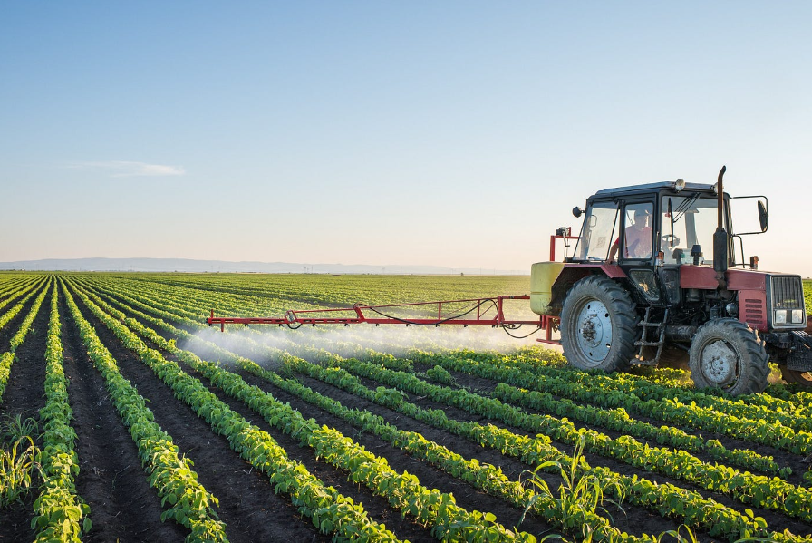
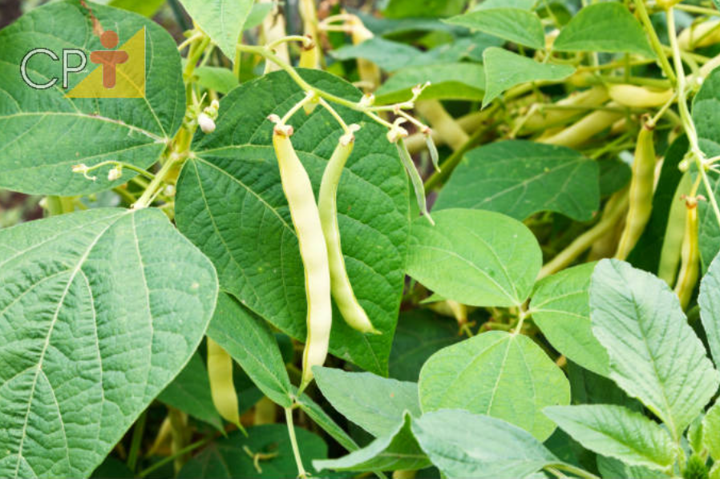
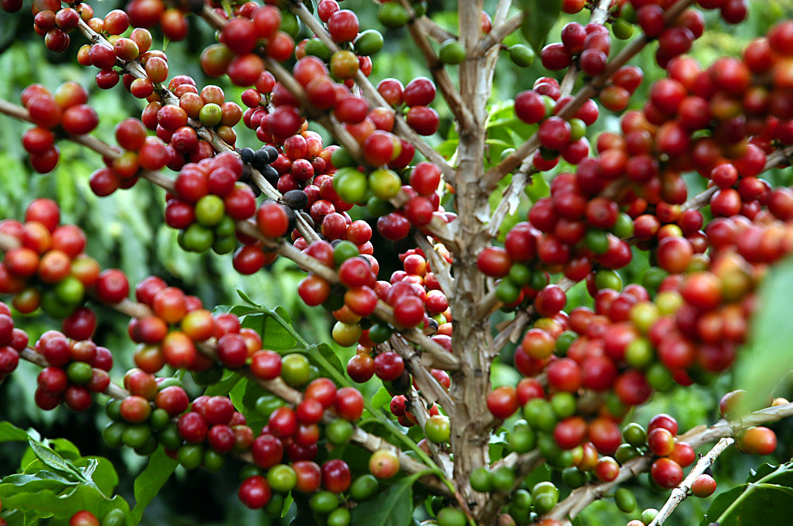
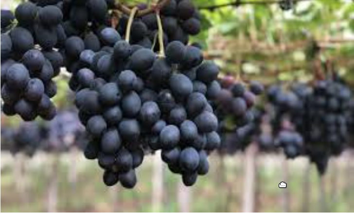

quemomos
Guilherme Rocha
Estudante do Curso de Analise e Sistemas
atualmente estou Estudando Desenvolvimento de Sistemas,no segundo ano do curso. no periodo da manha
Agricultura Brasileira
Segundo o Dicionário Aurélio, agricultura é o cultivo do solo, por meio de procedimentos, métodos e técnicas próprias, que buscam produzir alimentos para o consumo humano, como legumes, cereais, frutas e verduras, ou para serem usados como matérias-primas na indústria.
A agricultura no Brasil é uma das principais bases da economia do país desde os primórdios da colonização até o século XXI, evoluindo das extensas monoculturas para a diversificação da produção. A agricultura é uma atividade que faz parte do setor primário onde a terra é cultivada e colhida para subsistência, exportação ou comércio. Inicialmente produtora de cana-de-açúcar, passando pelo café, a agricultura brasileira apresenta-se como uma das maiores exportadoras do mundo em diversas espécies de cereais, frutas, grãos, entre outros. Segundo resultados de pesquisa feita pelo IBGE, no ano de 2008, apesar da crise financeira mundial, o Brasil teve uma produção agrícola recorde, com crescimento na ordem de 9,1% em relação ao ano anterior, motivada principalmente pelas condições climáticas favoráveis. A produção de grãos no ano atingiu a cifra inédita de cento e quarenta e cinco milhões e quatrocentas mil toneladas.
Para Norman Borlaug, Nobel da Paz de 1970, em visita ao Brasil em 2004, o país deve se tornar o maior destaque na agricultura. Enquanto os Estados Unidos já exploram toda a sua área agricultável, o Brasil ainda dispõe de cerca de cento e seis milhões de hectares de área fértil a expandir - um território maior do que a área de França e Espanha somadas.
Agricultura no Paraná
A agricultura no Paraná é, historicamente, uma das principais atividades econômicas. É responsável por cerca de um quarto da produção de grãos do Brasil. Fatores como clima e solo, nas várias regiões do Estado, têm possibilitado uma grande diversificação agrícola. O desempenho da agricultura no Estado está estreitamente relacionado ao crescimento do cooperativismo, que congrega atualmente mais de 40% dos produtores rurais e 56% da produção agropecuária do Estado, sendo do Paraná as duas maiores cooperativas do Brasil – a Coamo, em Campo Mourão, e a Cocamar, em Maringá. Os mais importantes produtos da agricultura paranaense são o trigo, o milho, o feijão e a soja, riquezas das quais foram obtidos recordes de safra, competindo com os demais estados.
O Paraná é o líder da produção de feijão no país desde 2006. O cultivo da soja é um dos mais recentes e foi expandido tanto no norte como no oeste do estado, e depois no sul. A cafeicultura, que é uma das principais atividades agrícolas do estado, embora não desfrute da mesma grandiosidade de antigamente (o Paraná, sozinho, já chegou a produzir 60% do café de todo o mundo), ainda faz com que o Paraná continue sendo um dos maiores produtores da federação brasileira.
 O Paraná tem se destacado e aprimorado, o plantio da uva, produzida principalmente nas microrregiões de Maringá, Londrina, Assaí, Curitiba, Apucarana, Francisco Beltrão, Capanema e Cornélio Procópio.
,0 <Microrregiões de Maringá - Produção da Uva
microrregiões de Maringá, destaca-se o Município de Marialva, conhecido como a Capital da Uva Fina do Paraná, foi responsável por 10,5% de toda a produção estadual da fruta em 2021, segundo os dados mais recentes do Instituto Brasileiro de Geografia e Estatística (IBGE).
A história da uva em Marialva, iniciou com os imigrantes japoneses. Com suas pequenas terras, eles transformaram o município no maior produtor de uvas finas do Paraná! Hoje, Marialva colhe 17 mil toneladas de uvas por ano.
combinação das condições ambientais na região, o nível tecnológico adotado e a diferenciação da qualidade das uvas finas de mesa produzidas foram determinantes para o reconhecimento e reputação nacional desses produtos, concedido pelo Instituto Nacional da Propriedade Industrial (INPI)
Entre as regras de produção a serem seguidas, estão o correto armazenamento, aplicação controlada dos defensivos agrícolas, descarte correto de embalagens, uso de equipamentos de proteção individual. No caso da própria uva, as bagas devem ser uniformes e ter aparência opaca, não podem possuir nenhum tipo de resíduo de defensivos ou cores diferentes da característica da fruta.
Marialva é conhecida como Indicação Geográfica, que é quando uma região tem referência na produção de algum produto. O Sebrae-PR fez todo o diagnóstico da região. “É quando ela está se desenvolvendo em função de algo diferente e que não tenha em outros estados. Marialva é referência pelo clima tropical, o que ajuda a cidade a produzir uvas de qualidade”, diz. O reconhecimento trouxe um complemento para a renda do pequeno produtor, são melhor remunerados pela qualidade da uva.
Antônio Pérez Martinez, produtor de Uva, afirma: “Não é só a questão de faturar financeiramente. A uva é uma fruta muito bonita. Se você está embaixo da parreira, você vê todo o processo. Procuramos ter um padrão de qualidade, um padrão de uva dentro do brix e das exigências legais. É muito artesanal. Passamos a tesoura uma, duas, três, vezes. Tem que tirar os brotinhos, é tudo serviço artesanal. Estamos esculpindo uma obra de arte”.